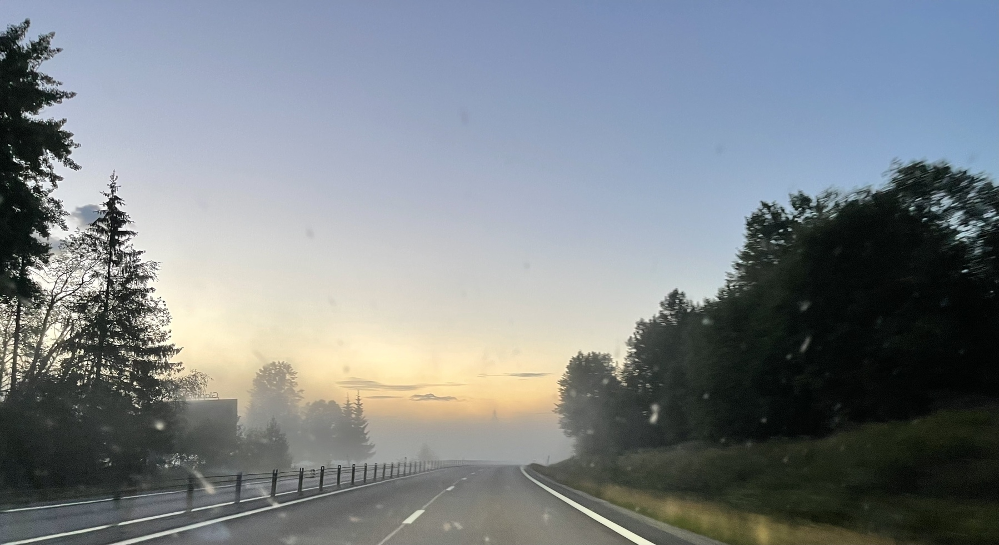
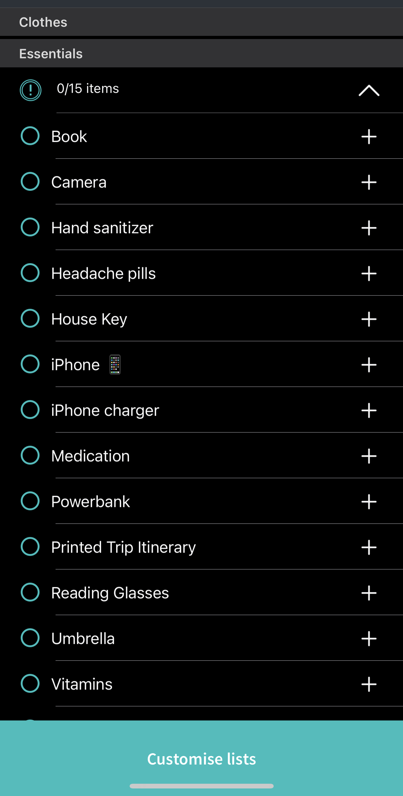

Last nights sunset in northern Sweden where I’m spending first four nights of vacation. Just stunning views and every time you look away and look back the landscape has changed. More photos coming, took most good ones with the big camera.
Jeff Epstein‚Äôs dance partner is suing Twitter, Facebook and Google because they banned his hate from their platforms. Somebody should send him the below XKCD comic to help him understand why he will loose this lawsuit, although it’s still probably too much text for him.

Vacation doesn’t officially start until Friday, but to cut down our driving time we did four hours of driving yesterday and working from a hotel in northern Sweden today. I took this photo almost at midnight. And this is NOT using the Night Mode on my phone. Loved all the fog with the sun behind it.
(The car is standing still at the road by the way, there was no traffic. Also: apologies for the very dirty windshield, northern Sweden is insect-packed, I didn’t want to stand still too long so didn’t put the camera outside the car to take the photo)

Finished reading: Doing Good Better: How Effective Altruism Can Help You Make a Difference by William MacAskill üìö Mini-review: Excellent and terribly thought-provoking and just inspiring. I only first came across effective altruism in September last year. But this is taking it to the next level. I‚Äôll have more to say soon :)
The vacation prepping is continuing. Set up my automatic plant water gadget today that I bought on Sunday. Took longer than I thought but hoping it will work! Next up: finish packing and clean out the fridge.
Vacation prepping
Started packing today for summer vacation which I leave for on Thursday. Yes it’s early but I have an incredibly busy week the next few days. Felt good to reduce the “vacation prep stress”. Otherwise I’m very excited to go. Staying in Sweden this year as well which I have no issues at all with. Looking forward to it. Also bought a probably unnecessarily fancy gadget to water our plants when we’re gone. Might write a short review of it once I set it up later this week. Also on vacation prep list: make a final book reading list! Suggestions accepted.
(Screenshot is the packing list generator app Packr I’ve used for last couple of years. I like it! Not linking to it to avoid anyone thinking I do affiliate links or something)

Finished reading: Wall of Silence by Tracy Buchanan üìö Mini-review: Fairly obvious twists and turns but still entertaining enough for a summer read. Finished it in like four hours. First book I read on my Kindle :)

My eBay purchase of a “new/open box” lens received today…. Bought from a super popular seller with enormous amount of positive feedback, so not sure what’s gone wrong here. I wanted to bring it on vacation starting in less than a week, so not sure what I’m doing now.

Selling my first product on eBay ever today. A camera lens that I am replacing with a different version. I am pretty nervous that I’ve misconfigured things. eBay was not easy to sell on for the first time, had to put a much lower price than I was comfortable with as starting price due to “seller limits”.
Donald Rumsfeld is Dead
George Packer, in the Atlantic:
Rumsfeld was the worst secretary of defense in American history. Being newly dead shouldn’t spare him this distinction. He was worse than the closest contender, Robert McNamara, and that is not a competition to judge lightly. McNamara’s folly was that of a whole generation of Cold Warriors who believed that Indochina was a vital front in the struggle against communism. His growing realization that the Vietnam War was an unwinnable waste made him more insightful than some of his peers; his decision to keep this realization from the American public made him an unforgivable coward. But Rumsfeld was the chief advocate of every disaster in the years after September 11. Wherever the United States government contemplated a wrong turn, Rumsfeld was there first with his hard smile — squinting, mocking the cautious, shoving his country deeper into a hole. His fatal judgment was equaled only by his absolute self-assurance. He lacked the courage to doubt himself. He lacked the wisdom to change his mind.
Tech purchase of the week
My first ever Amazon product, and the first traditional e-reader I ever bought. I don’t like the company, but I made extensive research and here in Sweden, it’s just the best in terms of getting any content on there. Plus it was discounted to $90. Just had it for two days but love the experience so far. I also love my iPad Pro 12.9”, but this is very different. I have read way too few books over the last…. well lets be honest, 10 years. And I read like one book a day when I was 7 to 15 years old. Not sure what happened. But this is an attempt to get some of that back.

Sunrise on Midsummer’s Day last weekend. That’s my friend Niklas siloutete you can see sitting on the cliff. A really great weekend.

Today I very happily signed the Try Giving pledge of giving at least 2% of my income for the rest of my life to organizations that can use it most effectively to improve the lives of others. I did this via Giving What We Can. I was already donating to GiveWell but this meant doubling my monthly donations. I’ll write more on what my choices were over the next few days.